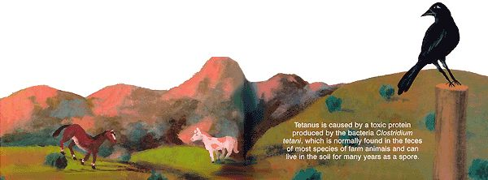

Tetanus and botulism ...a detective story.
The Navajo who owned the horse offered the mare a handful of alfalfa and she ate readily, despite her recumbency. Her tongue, as it moved in and out, seemed unusually lethargic. Dr. Sandigo pulled on the tongue and noticed a delay in the horse's natural response to pull it back. It appeared this mare was doomed, too.
As the doctor left the stricken horse he thought of an earlier visit where he'd examined a lamb that was trembling and appeared to be having uncontrolled muscle spasms, jumping reflexively when the doctor put his hand on its back. Also, the site of a recent tail docking appeared infected. The symptoms of tetanus in the sheep were different from those of the downer horses, but there was an important connection.
Tetanus is what is known as a clostridial disease because it is caused by a toxic protein produced by the bacteria Clostridium tetani. There are a host of other clostridial diseases aside from tetanus (which is the most common) including the dreaded Clostridium botulinum, better known as botulism.
While the Clostridium tetani bacteria is normally found in the feces of most species of farm animals, Clostridium botulinum thrives on dead and dying plant and animal tissue. Both bacteria can live in the environment for years. When a clostridium bacteria finds its way into a wound, the pus and dying tissue provide an ideal environment for growth. As the bacteria thrives and multiplies, toxins are released that travel through the peripheral nerves, eventually reaching the spinal cord. There the toxin interferes with normal activity at nerve junctions and, in the case of tetanus, causes a generalized muscular rigidity. Botulism results in a neuromuscular paralysis.
That said, tetanus has become less common in the United States because of a good annual vaccination program and timely boosters. Nevertheless, the disease, which is more common in the warmer southern states, has a poor prognosis. Indeed, 80% of affected animals die, even with treatment. Typically an affected animal will adopt a "sawhorse" stance, with all limbs extended rigidly out at an angle. Small ruminants like sheep will lay on their side with all of their limbs stiff. Eventually the toxin moves far enough up the spinal cord to cause respiratory paralysis and death.
In general, horses, goats and sheep are more susceptible to tetanus than cattle (dogs and cats rarely get it) and they should be given an annual injection of a tetanus toxoid. Whenever animals suffer a skin wound (including punctures or sole abscesses), a booster injection is necessary. Also, if any medical procedures such as castration or tail-docking are needed, they must be done using good sterile technique.
In horses, the tetanus toxoid is usually combined with other yearly vaccines, such as equine encephalitis and rhinopneumonitis. In ruminants, the toxoid is combined with Clostridial C and D vaccines, which also prevents a potentially devastating intestinal toxemia.
When Dr. Sandigo discovered the stricken lamb, he isolated it in a dark stall to minimize external stimulus and immediately vaccinated it with the tetanus toxoid. After administering an appropriate dose of antitoxin he proceeded to clean up the infected stump where the tail had been docked. Finally, he injected a hefty dose of penicillin.
Aside from bacterial infection in the spine and brain, animals can lose control of the muscles around the mouth (better known as lockjaw) and die of malnutrition. The owner of the infected lamb would feed the animal a high-calorie gruel through a stomach tube that he had fashioned from a section of garden hose.
While Dr. Sandigo recognized similar symptoms in the stricken horses, he feared that botulism was the cause of their demise. What puzzled him was that if all four horses had succumbed to botulism in four separate locations, where had they contracted the disease?
Driving through the sheep pastures and dry washes of Arroyo Hondo about three miles from the last infected horse, Dr. Sandigo passed a group of crows and ravens that had stopped to feast on some carrion. A crude burial pit of dead cattle, horses and other animals was now exposed, revealing hide, hair and bone fragments. Recent rains eroded the meager layer of soil covering the animal corpses, and the scavengers pecked relentlessly at the carcasses. Could this be the source of the Clostridium botulinum?
Dr. Sandigo obtained a fecal sample from one of the horses and mapped the locations of the other dead ones. Sure enough, the burial pit was equidistant from each of the farms. But unless each of the horses had come into contact with the area or with each other, thought Dr. Sandigo, how could they have contracted the same disease? Somewhere in the vicinity of the four farms there was a shared source of the botulism toxin that must have been in the feed source, in the water supply... or spread by another carrier.
Acting on a hunch, Dr. Sandigo submitted manure samples from the most recently deceased horse, along with feed and bird droppings from area feed troughs and tissue samples from the burial pit, to the New Mexico State Laboratory. Three days later, the results confirmed Dr. Sandigo's hypothesis: Ravens feasting on the dead animals had ingested the toxin, then had passed it to the horses through their droppings when they visited the feed troughs.
Make no mistake, the botulism toxin is so powerful that even the small amount found in a bird dropping or under a bird's talon is enough to kill a horse.
It is not unusual to find burial pits of dead animals in remote areas. If the soil coverage is inadequate, the decaying tissue is vulnerable to being spread by scavengers, such as ravens, crows, vultures or coyotes to healthy livestock. And make no mistake, the botulism toxin is so powerful that even the small amount in a bird dropping - or a small piece of tissue carried by a talon - is enough to kill a horse.
To prevent further cases of botulism, Dr. Sandigo recommended to the local Navajos that the burial pit be covered with a substantial layer of soil. In addition, he advised all horse owners in the area to allow him to administer a botulism antitoxin. In addition, since decaying hay has also been implicated in some cases of botulism in equines, the doctor advised horse owners to be diligent in monitoring feed quality to prevent outbreaks of the disease. (Decaying rotten hay should not be fed to horses.) Most of the horse owners complied, and no more horses were reported sick.
After a several long days on the reservation, Dr. Sandigo headed down the rough dirt road and into the setting sun. He spied his friends the ravens circling and scouting for their next meal. "Nevermore," he couldn't resist calling to them - "nevermore."
Related info:
Tetanus and Botulism
|
|
 |
|